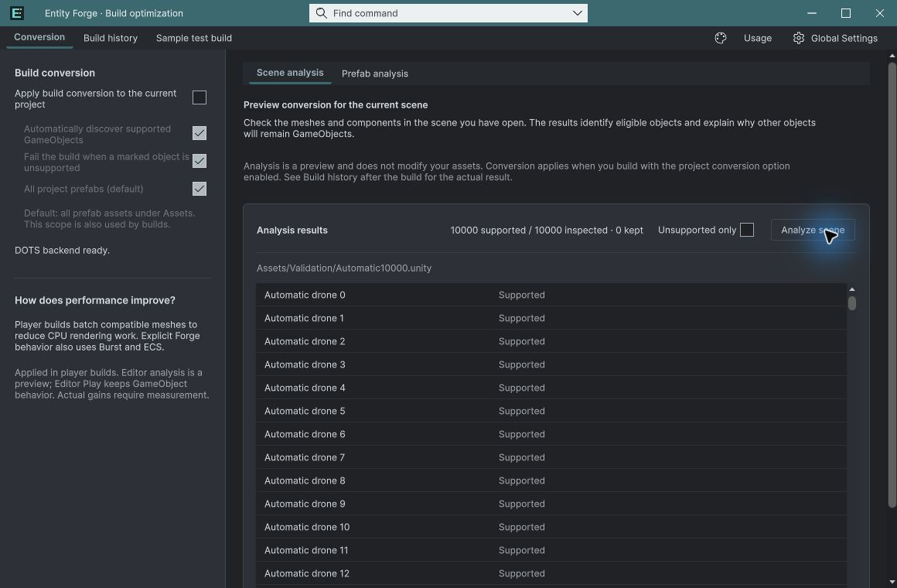

Tracefolio REPORTS & ISSUES
Tracefolio REPORTS & ISSUESEntity Forge 실제 자동 변환 검증과 빌드 기록 오류 수정
검증 대기일반 GameObject 1만 개의 Windows 자동 변환과 최신 패키지 설치를 확인했습니다. 이번 부하에서는 프레임 시간 개선이 없었습니다.
작업 결과
실제 변환·생명주기 검증 통과, 빌드 기록 교체 오류 수정. 성능 개선 검증은 미통과.
변경 내용
적용 내용
빌드 기록 파일의 일시적 교체 실패에 최대 250ms 재시도를 추가했습니다. 0.3.0-preview 패키지를 재생성하고 새 프로젝트에 재설치했습니다.
검증
Unity 6000.0.83f1 / Entities 1.3.15. 일반 GameObject 10,000개를 10,000개 엔티티로 자동 변환했습니다. 10회 드로 제출, 정지 Transform 쓰기 0회, 불필요한 시뮬레이션 0개를 확인했습니다. 동일 fingerprint·1280×720·600프레임의 실제 플레이어에서 OFF 16.7871ms / ON 17.0593ms로 약 1.62% 느렸습니다. 개선으로 판정하지 않습니다. 네이티브 이동·수명·활성/비활성·등록/해제·폴백 QA 통과. 수정 후 ON 빌드 errors=0. 샘플 제외 본체 UI 로드, 씬/빌드 설정 해시 보존 확인. 실제 마우스로 1만 목록 필터 축소/복원·선택/Inspector 이동·모서리 리사이즈 확인. 상세 검증



남은 사항
성능 개선 원인/병목 프로파일링과 재측정, CPU/GPU·메모리 비교, 모든 언어·테마·최소화/재로드 네이티브 회귀 및 문서 화면 갱신은 남았습니다. 60FPS 부근 수렴 원인은 미확인입니다. 일반 MonoBehaviour 자동 번역, Resources/Addressables 로더 통합도 후속 범위입니다. 판매 완료로 처리하지 않습니다. 교훈 검토: 실제 개선율을 측정값 그대로 기록한다는 기존 전역 지침으로 충분하여 전역 변경 없음.
작업 시간
- 제안 시간: 20~40분 · 시작 2026-11-03 13:22:35 KST
- 실제로 완료된 시간: 검증 기록 작성 36분 · 2026-11-03 13:58:35 KST. 공개 배포는 이후 별도 확인.
- XERJ: 실패 — XERJ node is not running. rg와 현재 소스·실제 Unity 로그로 대조.